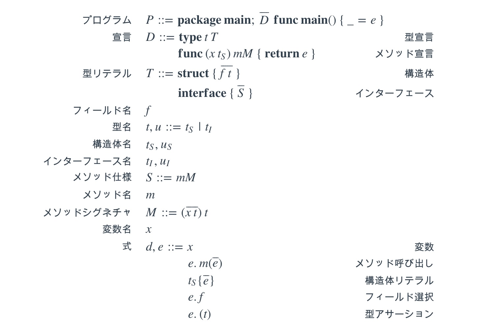
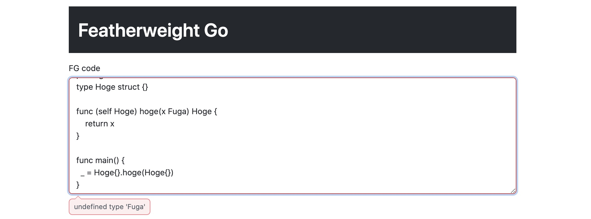

Elm で Featherweight Go を書いてみた（その１）
タイトルの通り，Elm で Featherweight Go を作って遊んでました． 本記事はそのメモ書きです．
あとこれは Elm Advent Calendar 2020 の7日目の記事です．
Featherweight Go
Go にジェネリクスを導入するために考案された，極めてミニマムな Go 処理系（の形式的な定義）． そのまんま「Featherweight Go」という論文が出てる． 前に，ざっくり日本語でまとめました：
論文では Featherweight Go（以下 FG）と，それにジェネリクスを追加した Featherweight Generics Go の構文規則・評価規則・型付け規則などが定義されており，型安全性が証明されている． 今回は，Featherweight Go のパーサーと型検査器を論文の定義に則って Elm で実装した話．
ちなみに評価の方は実装しないです．
Elm
Elm は JavaScript へとトランスパイルされる Web フロントエンドに特化した純粋関数型プログラミング言語． 構文は Haskell に似ているが，言語機能自体は Haskell のように多彩ではなく，極めてコンパクトである．
今回 Elm を使う理由は2つあって：
- Elm でプログラミング言語作る人がほとんど居ないから
- 簡単に Web ビュー側を作れるから
です．
Elm でパーサーを作るには
Elm でパーサーを記述するには elm/parser という公式が提供しているパーサーコンビネーターライブラリを使う．
FGのパーサーを作る
構文規則は次の通り：

これを Elm でひたすら実装していく．
構文の型を定義
まずは，構文を表現する型を定義しよう． ひたすら予約語にあたる部分を排除するだけだ：
module Go.Featherweight.Syntax exposing (..)
type alias Program =
{ decls : List Declaration, exp : Expression }
type Declaration
= TDecl
{ name : TypeName
, literal : TypeLiteral
}
| MDecl
{ recv : ( VarName, TypeName )
, name : MethodName
, sign : MethodSignature
, retv : Expression
}
type alias TypeName = String
type alias VarName = String
type alias MethodName = String
type alias FieldName = String
type TypeLiteral
= Structure (List ( FieldName, TypeName ))
| Interface (List MethodSpecific)
type alias MethodSpecific =
{ name : MethodName, sign : MethodSignature }
type alias MethodSignature =
{ args : List ( VarName, TypeName ), rett : TypeName }
type Expression
= Var VarName
| MethodCall
{ exp : Expression
, method : MethodName
, args : List Expression
}
| StructLiteral
{ struct : TypeName
, args : List Expression
}
| SelectField
{ exp : Expression
, field : FieldName
}
| TypeAssertion
{ exp : Expression
, ty : TypeName
}パーサーを書く
先に，FG のパーサーを記述する上で便利なヘルパー関数をいくつか定義しておく：
module Go.Parser.Helper exposing (..)
newlineSequence : Parser () -> Parser a -> Parser (List a)
newlineSequence end p = ...
blockWith : ( String, String ) -> Parser a -> Parser (List a)
blockWith ( start, end ) p = ...
whitespaces : Parser ()
whitespaces = ...
newlines : Parser ()
newlines = ...実装はこの辺りを見てください． newlineSequence は改行区切りで引数のパーサーを実行してくれる． 例えば，構造体のフィールドを改行区切りで列挙するのをパースするのに役立つ． blockWith は，1引数目で与えた開始文字列と終端文字列で囲まれてかつ，2引数目のパーサーをカンマ区切りで実行してくれる． 関数定義の引数のパースなどに役立つ． whitespaces は1つ以上の空白を，newlines は1つ以上の改行をパースする．
で，まずは「プログラム」の部分のパーサーだ． プログラムは次のようなのをパースしたい：
package main
// 構造体や関数の定義
func main() {
_ = .. // なんらかの式
}とりあえず，式や構造体の定義のパーサーはあるものと仮定して実装する：
import Parser exposing (..)
import Go.Parser.Helper exposing (..)
parser : Parser Program
parser =
let
parseMainPackage = -- package main の部分
succeed ()
|. keyword "package"
|. whitespaces
|. keyword "main"
parseMainFunc = -- func main() の部分
succeed ()
|. backtrackable (keyword "func")
|. backtrackable whitespaces
|. keyword "main()"
parseMainExp = -- _ = e の部分
succeed identity
|. symbol "_"
|. whitespaces
|. symbol "="
|. whitespaces
|= expParser
in
succeed Program
|. parseMainPackage
|. newlines
|= newlineSequence parseMainFunc declParser
|. spaces
|. symbol "{"
|. spaces
|= parseMainExp
|. spaces
|. symbol "}"
|. spaces
|. Parser.end
declParser : Parser Declaration
declParser = Debug.todo "Decl Parser"
expParser : Parser Expression
expParser = Debug.todo "Exp Parser"基本的に declParser や expParser も同じように構文定義を見ながら実装していくだけなので割愛する（コード）． 1つだけ，なんらかの変数をパースするパーサーだけは書いておく． elm/parser には variable というまさにこれをやるパーサーコンビネーターがあるのでこれを利用する：
nameParser : Parser String
nameParser =
variable
{ start = Char.isAlphaNum -- 先頭文字，小文字や数字を含まないとかできる
, inner = \c -> Char.isAlphaNum c || c == '_'
, reserved = keywords -- 変数にはならない予約を列挙する
}
keywords : Set String
keywords =
Set.fromList
[ "package"
, "main"
, "func"
, "struct"
, "interface"
, "type"
, "return"
]テスト
とりあえず簡単に，FGの論文にあるサンプルコードが動作するかのテストだけを書いた：
module Test.Go.Featherweight.Syntax exposing (suite)
import Go.Featherweight.Syntax exposing (..)
import Parser
import Test exposing (..)
suite : Test
suite =
describe "module Go.Featherweight.Syntax"
[ describe "parser"
[ test "parse sample FG code" <|
\_ ->
Parser.run parser sample
|> Expect.equal (Ok <| { decls = ..., exp = ... }
sample : String
sample =
String.dropLeft 1
"""
package main
type Any interface {}
type Function interface {
Apply(x Any) Any
}
type incr struct { n int }
func (this incr) Apply(x Any) Any {
return this.n.add(x.(int))
}
type pos struct {}
func (this pos) Apply(x Any) Any {
return x.(int).lt(zero)
}
type compose struct {
f Function
g Function
}
func (this compose) Apply(x Any) Any {
return this.g.Apply(this.f.Apply(x))
}
func main(){
_ = compose{incr{x}, pos{}}.Apply(y).(bool)
}
"""FGの型検査器を作る
型検査器を作るにはとりあえず，論文の型付け規則（3.3節の図11）をそのまんま実装していけばいい． まぁまぁ量があるので型付け規則自体は載せません（論文を見て）．
例：プログラムの型付け規則
全部載せると膨大なので，「プログラム」の型付け規則とその実装だけ． 型付け規則は次のようになっている：
distinct(tdecls(seq(D)))
distinct(mdecls(seq(D)))
seq(D ok)
[] |- e : t
---------------------------------------------
package main; seq(D) func main { _ = e } ok数式で書くの大変なので，だいぶ本来の記法と離れちゃってますが雰囲気として，--- より上が全て成り立てば下が成り立つという感じ． 下の ... ok というのは「プログラム」が正しく型付けされていることを意味しており，上のそれぞれは：
Dというのは型（構造体・インターフェース）の宣言かメソッドの宣言seq(D)はDのリスト（シーケンス）tdecls(seq(D))はseq(D)のうち型の宣言だけを集めたものmdecls(seq(D))はseq(D)のうちメソッドの宣言だけを集めたものdistinct(xs)はxs内に重複がないことを意味する（つまり，型やメソッドが重複してたらダメ）D okは宣言Dが正しく型付けされていることを意味するseq(D ok)はseq(D)の全ての宣言が正しく型付けされていることを意味する[] |- e : tは式eがなんらかの型tで型付けされていることを意味する
最後ので [] は空の型環境を意味している． 型環境はある式がどの型になるかの辞書だ． つまり，Elm で実装するとこんな感じ：
module Go.Featherweight.Type exposing (..)
import Dict exposing (Dict)
import Go.Featherweight.Syntax as FG exposing (..)
type alias Gamma =
Dict VarName TypeNameまた，型検査をするには seq(D) で宣言されている型やメソッドの情報が必要だ． 論文の数理論理学的な定義では，情報が必要になるたびに seq(D) から引っ張ってきている． しかし，実際のプログラムでそれをやると効率が悪いので，事前にそのような辞書を環境（Env）として定義しておく：
type alias Env =
( Gamma, DeclMap )
-- 型名をキー
-- 型の情報（`TypeLiteral`）とメソッドの情報（`MethodSpecific`）が値
type alias DeclMap =
Dict TypeName ( TypeLiteral, List MethodSpecific )
newEnv : List Declaration -> Env
newEnv decls =
( Dict.empty, mkDeclMap decls )
mkDeclMap : List Declaration -> DeclMap
mkDeclMap decls = ... -- ちょっと複雑なので割愛で，「プログラム」の型付け規則をそのまんま実装すると次のようになる：
module Go.Featherweight.Type exposing (..)
check : FG.Program -> Result TypeError ()
check p =
let
env =
newEnv p.decls
dmap =
Tuple.second env
in
combine_
[ distinct (tdecls p.decls)
|> Result.mapError (DuplicatedDefinition "type")
, distinct (mdecls p.decls)
|> Result.mapError (\( x, y ) -> DuplicatedDefinition "method" (x ++ "." ++ y))
, combine_ (List.map (checkDeclWith dmap) p.decls)
, typeInferWith env p.exp
|> Result.map (always ())
]
-- `Result.combine` は `Result e a` を返すが
-- `Result e ()` を返す関数が欲しかった
combine_ : List (Result e a) -> Result e ()
combine_ =
Result.map (always ()) << Result.combine
-- 重複のチェックは
-- 型の場合は型名が重複してないかどうか
-- メソッドの場合は型名+メソッド名が重複してないかどうか
distinct : List comparable -> Result comparable ()
tdecls : List Declaration -> List TypeName
mdecls : List Declaration -> List ( TypeName, MethodName )
checkDeclWith : DeclMap -> Declaration -> Result TypeError ()
checkDeclWith dmap d = ...
typeInferWith : Env -> Expression -> Result TypeError TypeName
typeInferWith env exp = ...checkDeclWith は与えた宣言（Declaration）が正しく型付けされているかどうかをチェックする． つまり D ok にあたる． typeInferWith は2引数目の式（Expression）の型を推論して返す関数だ． 推論できない場合は TypeError を返し，推論できた場合はその型名を返す． 「プログラム」の e の場合，どんな型に推論されても問題ないので Result.map (always ()) で結果を破棄している．
これを型付け規則分作らないといけない． まぁまぁしんどかった．
Webページを作る
Elm なので，FGのコードを書くと型検査してくれるページを作った：

やっていることは簡単で，テキストエリアの文字列を Go.Featherweight.Syntax.parser でパースして Program 型の値を作り，それをそのまま Go.Featherweight.Type.check しているだけ． そして，結果がエラーだったらそのエラーメッセージを出力して，エラーでなければ「OK」って出しているだけ．
おしまい
作ってから時間が経ってしまったので，記事が結構雑だ．．． その２では Featherweight Generics Go のパーサーと型検査器です．